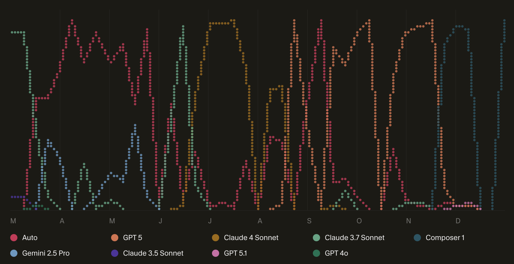

2025 in review
Here's a summary of Subtle Software projects across 2025 as well as some reflections heading into 2026.
| Project | Status | Description |
|---|---|---|
| Subtle Software GA | GA | This blog. 5.2k unique visitors and 7.8k pageviews to date. |
| Stringme Retired | Retired | This converted any webpage into a text file for use with LLMs. I redirected this to Firecrawl's solution. |
| DistillJS Retired | Retired | This project challenged then-novel reasoning models to approximate LLM behavior into a deterministic Javascript function. This actually worked reasonably well for some tasks including summarization and sentiment analysis. I expect in the long-run LLMs will become cheap and ubiquitous (i.e. on-device), so this project only solves a temporary problem and not super well. |
| Bookdate Beta | Beta | I built this project to host a sponsorship booking page for the Flow State newsletter. There's a waitlist link which has gotten a few signups. This could help creators drive sponsorship revenue and take a small cut; but Substack appears to be launching an ad network of its own in 2026. |
| Substats GA | GA | This is a data-as-a-service (DaaS) product for media companies, PR/ad agencies, and more to gain visibility into thousands of top Substacks. This garnered a half dozen customers in beta and is now officially in GA (more below). |
| LGTMBot Alpha | Alpha | I built a Chrome extension that scans the current webpage and navigates across various paths, finding visual and functional bugs using OpenAI's computer vision API. This is working OK but doesn't totally solve my bottleneck around functional QA. I'll continue iterating on this until either it cuts down my manual QA labor or Cursor delivers a solution themselves (which seems somewhat imminent). |
| Agentic Equities Beta | Beta | This project tracks ChatGPT sentiment around stocks in the S&P 500. The premise is that retail traders are increasingly asking ChatGPT for what stocks to pick, meaning this index could be an indicator of near-term retail activity. This was covered in Bloomberg and attracted about 10k visitors. I've paused the ratings since they cost me about $100/week to update and am figuring out next steps to revive it profitably. |
| income.wtf Alpha | Alpha | This is a project that helps creators who monetize across platforms visualize their income. Many creators have no easy way to understand what their run-rate is across their various income streams. This project synthesizes their revenue data across Stripe, Patreon, and YouTube to show their annual run rate and revenue trends over time. |
| Flow State Store GA | GA | The Flow State Store is powered by FourthWall (which I highly recommend), but their built-in storefronts offer only limited customization. I wanted a cooler, SSENSE-style appearance and also to add affiliate links to third-party products. I built a new Flow State storefront using the FourthWall API. |
| Clank GA | GA | On several occasions I've wanted to ask an LLM about an email thread, such as digesting a long thread and suggesting a response or giving me feedback on a newsletter preview. I set up a simple email address (yo@clank.email) so that you can get an LLM response directly from your email inbox. The first five emails are free, then plans are $6/mo for 200 emails/mo and $30/mo for effectively unlimited emails/mo. |
Here are some reflections on these projects and on the Subtle Software project overall after nearly a year in operation.
"The new way to build software"
This is Cursor's tagline. The premise of Subtle Software is that LLMs are changing how software gets built, such that individuals and tiny teams can build software businesses that previously required dozens or hundreds of people.
I started using Cursor in March at the start of the Subtle Software project. I started by building relatively simple apps (this blog, simple dev utilities) and over time graduated to building fully featured SaaS apps (Substats, Clank). According to Cursor's 2025 recap, I used 1,409,535,919 tokens over the course of 2025.
Over this same period, Cursor itself became significantly more powerful. They added Bugbot and Cloud Agents, and shipped their own powerful coding model, Composer-1. This followed significant improvements across model providers, and in fact my go-to model switched about six times over 2025:
Heading into 2026, I plan to continue to use Cursor as my daily driver for coding and expect many more significant improvements in the product in 2026. The main area I hope Cursor invests in is functional QA, which has been probably the most painstaking bottleneck in my own software development workflow.
Targeting businesses
Over the course of the year my product focus shifted from small utilities geared toward independent developers (my own profile) to software subscriptions for companies. Once I made that shift, I started pulling in more revenue.
Specifically, Substats is the most promising software product heading into 2026. It gathers rich time-series data on top Substacks, giving companies a vivid picture of the increasingly important Substack ecosystem. More and more companies across media writ large need to understand this ecosystem, and Substats is the best way to accomplish that.
The main skill I need to develop in growing these B2B products is outbound sales. As Ken Griffin said, "If we're all gonna eat, someone has to sell."
The customers I converted to Substats were all cold outreach to people in my network. I tried a bunch of AI tools for scaled outreach but none really seemed to work. I think I overthought sales & marketing. My cofounder ChatGPT and I discussed doing basic cold outreach to promising contacts from a dedicated email address at a scale of 10-15 handwritten emails per day. That's totally doable and doesn't require any fancy tooling. Since Substats pricing starts at $250/mo, I don't need a huge volume of customers to reach a significant ARR number. We'll see how it goes in January!
Plans for 2026
The first goal for 2026 is to scale the Substats customer base. It achieved product-market with several customers during the closed beta, who said it's an invaluable data source at a price that's much more reasonable than similar "social monitoring" products. Just need to hustle to reach and convert additional customers. Fortunately the product appeals to companies across several industries (digital media, PR/advertising, talent agencies, and investment firms).
The second goal is to continue building business-oriented software products that are differentiated both on functionality and price. Clank is an interesting example. It lets you email an LLM, bringing the functionality of frontier models into your email threads. Compared to last year, I'm starting 2026 with the ability to use Cursor to generate production-grade B2B SaaS products. The bottleneck is no longer execution but finding the right idea.
The stretch goal is to explore and monetize an AI powered investment product. So far, I've explored ChatGPT sentiment around public stocks in the form of Agentic Equities, which was featured in Bloomberg and attracted about 10k visitors and signups from folks from JPMorgan and Rothschild. Aside from exploring the impact of LLM recs on equities trading, there are also some very interesting opportunities around agents and prediction markets.
Finally, in 2025 I consulted with a few companies whose teams and products were interesting. Specifically, I like working with teams who are embracing the "new way to build software" so that I can navigate this new world with other smart people. I'm interested in consulting with teams (and possibly joining a company) that's fully committed to this new mode of software development. Everyone else will be left behind.
Thanks for reading! Much more to come in 2026.